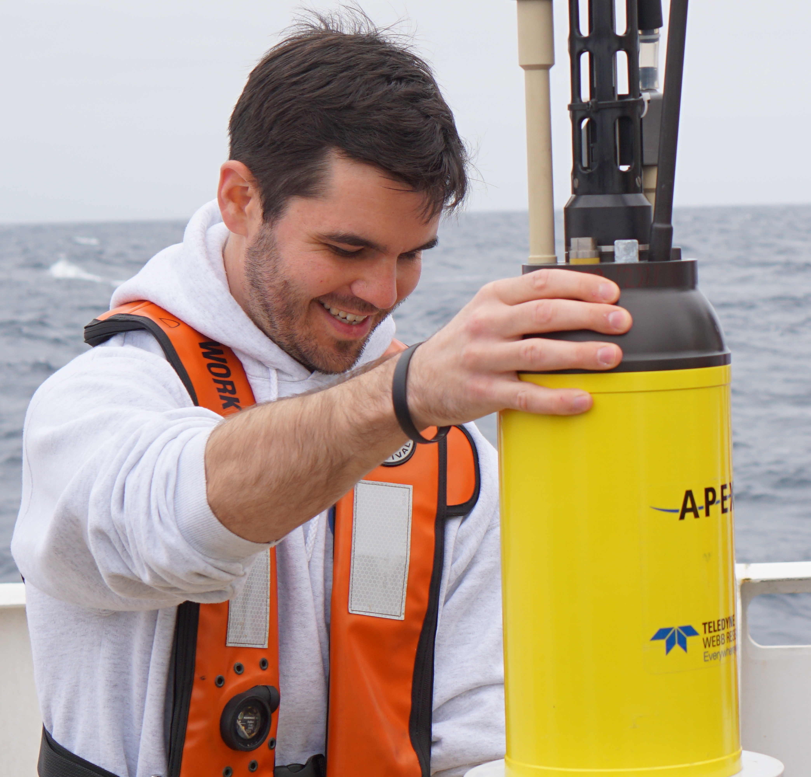

About Me
I am a marine biogeochemist and postdoctoral scholar at the University of Washington Cooperative Institute for Climate, Ocean, and Ecosystem Studies (CICOES). I work in conjunction with NOAA's Pacific Marine Environmental Laboratory (PMEL) in Seattle.
My research focuses on ocean biogeochemistry on both global and regional scales. Recently, I've been interested in applying machine-learning approaches to oceanographic observations to create data products that can be used for the computation of air-sea carbon flux, for the analysis of ocean oxygen dynamics, and for comparisons to biogeochemical models. Innovative data analysis approaches are crucial if we hope to fully utilize the wealth of new data coming from autonomous measurement platforms in the ocean.
One particular focus of mine is the California Current Large Marine Ecosystem (CCLME). The CCLME is one of four major eastern boundary current upwelling systems in the global ocean. These systems exist off the western coasts of major landmasses and support high biological productivity and biodiversity. The CCLME is important for a variety of commercial fisheries on the U.S. west coast. However, changes to the Earth's climate are resulting in rapid warming, acidification, and deoxygenation in the CCLME. I use measurements from robotic profiling floats and other data sources in the region to quantify how these environmental changes are affecting biological production and carbon cycling in the CCLME.
Some of my previous work has focused on developing and advancing novel methods for measurements of dissolved carbon dioxide in seawater and on using numerical modeling and laboratory experimentation to improve consistency between measurements and calculations of carbon dioxide chemistry. I performed much of this work while pursuing my PhD from the University of South Florida College of Marine Science.
During my time as an ocean chemist, I've enjoyed the challenges of conducting research in the laboratory, computationally, and at sea. I have extensive experience making a variety of ocean chemical measurements, including dissolved inorganic carbon, pH, and total alkalinity. I'm fluent in MATLAB, have experience in R and Python, and have contributed valuable software and data products to the oceanographic community. Finally, I've participated in a few large-scale research cruises, including the NOAA Ocean Acidification Program's 2016 West Coast Ocean Acidification Cruise, 2017 Gulf of Mexico Ecosystems and Carbon Cycling Cruise, and 2021 West Coast Ocean Acidification Cruise.